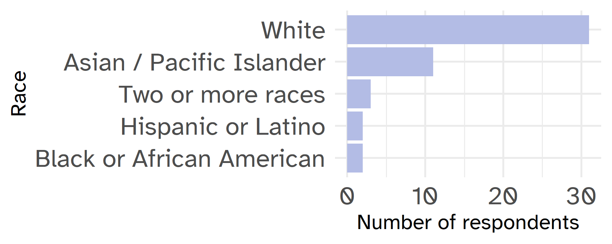

Total respondents for initial demographic survey
95
Total kit requests
182
Total products requested
1248
Gender of Surveyed Students
| Gender | N | % |
|---|---|---|
| Female | 74 | 77.9 |
| Male | 18 | 18.9 |
| Other | 3 | 3.2 |
Race/Ethnicity of Surveyed Students

Sexual Orientation of Surveyed Students
| Sexual Orientation | N | % |
|---|---|---|
| Heterosexual | 50 | 68.5 |
| Bisexual | 9 | 12.3 |
| Queer | 5 | 6.8 |
| Lesbian | 3 | 4.1 |
| Asexual | 2 | 2.7 |
| Gay | 2 | 2.7 |
| Prefer not to say | 2 | 2.7 |
Class Year of Surveyed Students
Percent of surveyed students who believe contraceptive products are available on UMR campus
42.1%
Percent of surveyed students who see cost as a barrier to accessing contraceptives at school
9.6%
Student perceptions of resource access at UMR
Percent of surveyed students who feel comfortable buying contraceptives
80.0%
Percent of surveyed students who feel that UMR provides a safe, supportive environment
87.4%
Barriers to accessing contraceptives at UMR